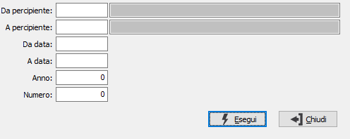

Annullamento stampa certificazioni
Il programma effettua l'annullamento della stampa delle certificazioni.

DA PERCIPIENTE: eventuale codice del percipiente, presente in anagrafica fornitori, da cui si vuole iniziare la selezione per l’annullamento. Confermando a vuoto, la selezione inizia dal primo fornitore valido. Sul campo sono attive le funzioni di ricerca (F9).
A PERCIPIENTE: eventuale codice del percipiente, presente in anagrafica fornitori, con cui si vuole terminare la selezione per l’annullamento. Confermando a vuoto, la selezione termina con l’ultimo fornitore valido. Sul campo sono attive le funzioni di ricerca (F9).
DA DATA: eventuale data movimento da cui deve iniziare l'annullamento. Confermando a vuoto, l'eliminazione inizia con la prima data valida.
A DATA: eventuale data movimento con cui deve terminare l'annullamento. Confermando a vuoto, l'eliminazione termina con l'ultima data valida.
ANNO: campo numerico per definire l’anno di cui si desidera effettuare l’annullamento, il campo deve contenere un valore valido.
NUMERO: campo numerico per definire il numero per cui si desidera effettuare l’annullamento.